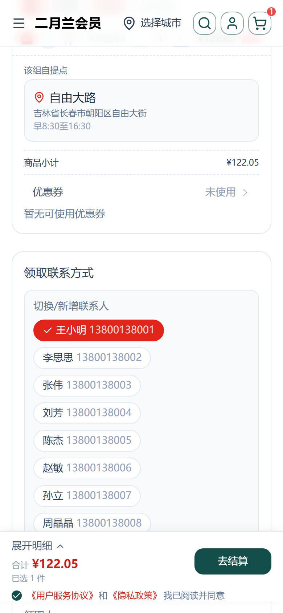
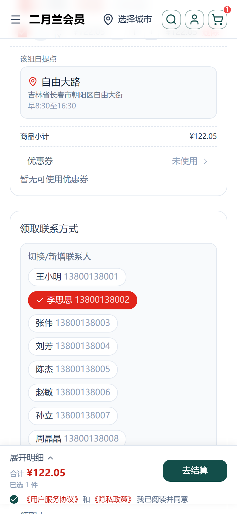
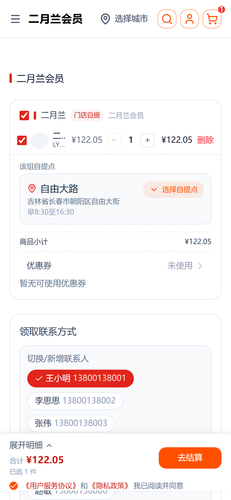
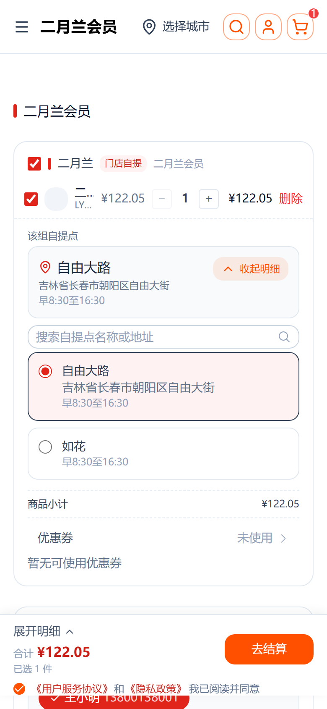

把「切换联系人」从易被忽略的下拉菜单改为直接可见的联系人 chips，点选即回填；同档自提点多时，自提点概览卡提供选择自提点展开切换器（搜索 + 单选）。
以下截图均来自手机标准视口，真实访问链路（注册 → 加购自提变体 → 结算）核验。
| 条件 | 取值 |
|---|---|
| 访问地址 | https://www.youshop.cn/t2（本地生产构建渲染同款 UI） |
| 视口 | 390 × 844，dpr = 2（手机标准视口） |
| 登录用户 | 新注册测试账号（无地址簿 → 走示例联系人池，展示 10 个联系人） |
| 加购 | 自提变体 49·二月兰尊享年卡会员（配送档案#15「二月兰」requiresContact=true） |
| 多自提点 | 档案#15「二月兰」已正式绑定 2 点（自由大路#4 ＋ 门店自提#7），详见「配送档案自提点管理修复」手册 |
登录用户在自提单结算页，「领取联系方式」卡片内直接显示切换/新增联系人 chips，当前项高亮 + ✓，点选即回填。


| 校验点 | 预期 | 实际 | 结果 |
|---|---|---|---|
| 切换提示可见性 | 直接可见，非折叠下拉 | 「切换/新增联系人」标题 + 一排胶囊 chips | ✓ 通过 |
| 选中高亮 | 当前联系人带 ✓ 且高亮 | 红色胶囊 + 白色 ✓，与其它浅色 chip 明显区分 | ✓ 通过 |
| 点击切换回填 | 回填领取人/电话 | 点「李思思」→ 领取人=李思思、电话=13800138002 | ✓ 通过 |
| 新增入口 | 提供「＋ 新增联系人」 | 虚线胶囊「＋ 新增联系人」，点击清空输入框 | ✓ 通过 |
| 游客退路 | 游客仍手填名称/电话 | 未登录时不显示 chips 面板，保留三个输入框 | ✓ 通过 |
同一自提箱有多个自提点时，概览卡出现「选择自提点」按钮，点开是搜索框 + 单选点列表；单选点时只显示概览卡、无展开按钮。


选择「自由大路 / 门店自提」其中一个后概览卡切至新点，主选中反馈即时生效；二月兰档案现正式绑定 2 点（配置与后台修复见「配送档案自提点管理修复」手册：pickup-profile-pickup-admin/index.html）。
| 校验点 | 预期 | 实际 | 结果 |
|---|---|---|---|
| 仅当多自提点才显示展开 | 自提点 > 1 才见按钮 | 档案#15 现有 2 点 → 见「选择自提点」按钮 | ✓ 通过 |
| 展开选择器 | 搜索 + 单选点列表 | 搜索框 + 自由大路/门店自提 两个单选卡片 | ✓ 通过 |
| 就近默认 | 默认选中最近点 | 默认自由大路，选中红色高亮 | ✓ 通过 |
| 切换即写库 | 换点写入配送方式/自提点 | 选「自由大路/门店自提」→ 概览与后端同步切换 | ✓ 通过 |
| 配置保持 | 二月兰永久绑定 2 点 | 档案#15 现正式绑定 自由大路#4 ＋ 门店自提#7（非临时） | ✓ 通过 |
| 条目 | 值 |
|---|---|
| 改动文件 | CheckoutPickupContactBlock.vue · BoxPickupBlock.vue · useSampleAddressBook.ts · layers/base/i18n/locales/*.ts |
| 部署方式 | node scripts/deploy.mjs（本地构建 → scp → pm2 restart，服务器不构建） |
| 验证环境 | 生产 www.youshop.cn/t2 ＋ 本地生产构建(同款 UI)手机视口 |